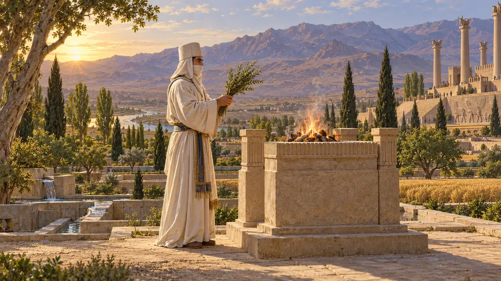
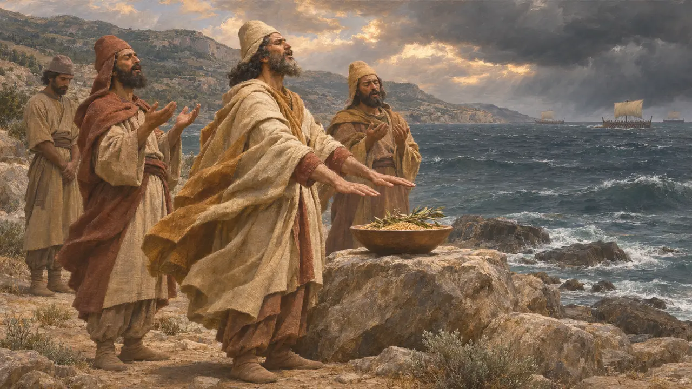
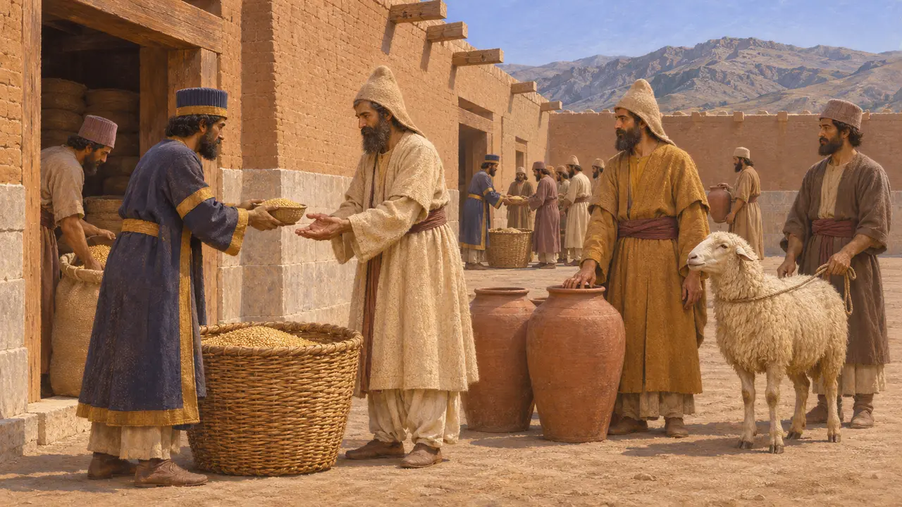
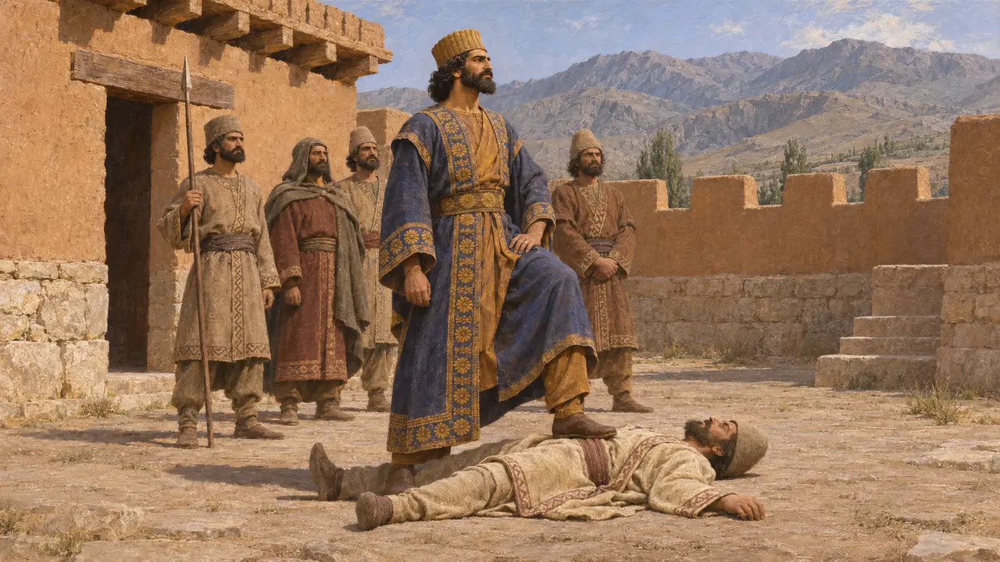
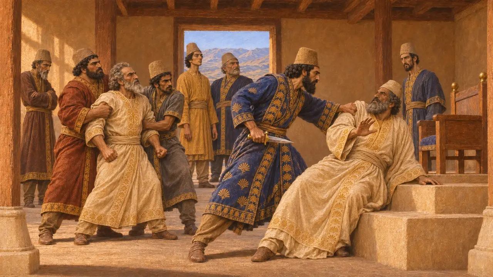
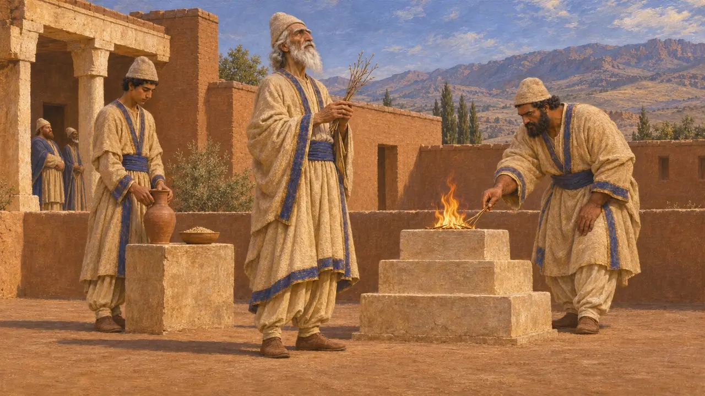

Les mages
Prêtres et spécialistes du rituel chez les Mèdes et les Perses, vers 550-479 av. J.-C.
Les mages étaient les spécialistes du rituel dans le monde achéménide, connus par les auteurs grecs comme par les archives de l'empire lui-même. Ils offraient des sacrifices, interprétaient les songes et recevaient des rations de l'administration royale. Darius désigna un mage, Gaumata, comme l'usurpateur qu'il renversa en 522 av. J.-C., ce qui place les mages au cœur de l'épisode le plus controversé de la période.
Dans le jeu : Le jeu montre les mages à travers la Demeure des mages et le mage Gaumata dans l'histoire de Bagastana. Aucun bâtiment appelé demeure des mages n'est connu ; c'est une simplification du jeu, et la véritable identité de Gaumata reste débattue.

Une tribu mède et une vocation sacerdotale
Récit antiqueHérodote compte les Mages parmi les six tribus des Mèdes. Il affirme qu'aucun Perse ne pouvait sacrifier sans qu'un mage se tînt là pour entonner un chant sur la naissance des dieux. Il dit aussi qu'ils laissaient les morts être déchiquetés par les oiseaux ou les chiens, et que lors de la campagne de Xerxès en 480 av. J.-C., des mages firent offrandes et incantations pour apaiser une tempête au large de la Magnésie. Il ajoute non sans ironie que le vent est peut-être simplement tombé de lui-même.
Herodotus 1.101; 1.132; 1.140; 7.191

Les mages dans les tablettes de Persépolis
Dans les sourcesLes tablettes élamites des archives des Fortifications de Persépolis, datées d'environ 509 av. J.-C. à 493 av. J.-C., nomment des hommes appelés makuš. Ils recevaient de l'orge, du vin et des animaux pour les offrandes, parmi lesquelles le lan, un sacrifice régulier entretenu par l'État. Ils œuvraient dans le même système que les prêtres des dieux élamites : l'administration du Roi finançait donc plusieurs cultes côte à côte. Certains mages apparaissent dans des tâches qui ne sont pas manifestement religieuses.
Persepolis Fortification tablets; W. Henkelman, The Other Gods Who Are, 2008

Gaumata le mage à Behistun
Dans les sourcesL'inscription de Darius à Behistun rapporte qu'en 522 av. J.-C. un mage nommé Gaumata se souleva à Paishiyauvada, prétendit être Bardiya, fils de Cyrus, et s'empara de la royauté. Darius affirme que lui et une poignée d'hommes le tuèrent dans la forteresse de Sikayauvati, en Nisaya, en Médie. Il déclare aussi avoir restauré les lieux de culte que Gaumata avait détruits. Le relief qui surmonte le texte montre Gaumata gisant sous le pied de Darius.
DB §11-14

La question du faux Bardiya
ContestéHérodote livre un récit plus détaillé : deux frères mages régnèrent après Cambyse jusqu'à ce que sept nobles, dont Darius, les tuent. Il ajoute que les Perses célébrèrent ensuite une fête appelée Magophonie, le massacre des mages. Sa version concorde dans les grandes lignes avec celle de Darius, mais de nombreux historiens soupçonnent l'histoire de l'imposteur d'avoir servi à Darius pour justifier le meurtre du véritable Bardiya et la prise d'un trône qui ne lui revenait pas par la naissance. D'autres tiennent le récit de Behistun pour globalement véridique.
Herodotus 3.61-79; P. Briant, From Cyrus to Alexander, 2002

Les mages et Zoroastre
ContestéLa tradition postérieure fit des mages les prêtres de la religion de Zoroastre. Les inscriptions achéménides honorent Ahuramazda mais ne nomment jamais Zoroastre, et Hérodote ne le mentionne pas. Certains spécialistes estiment que la cour perse était déjà zoroastrienne. D'autres voient dans les mages de cette période les gardiens d'un rituel iranien plus large, et les tablettes les montrent au service de plusieurs cultes.
M. Boyce, A History of Zoroastrianism II, 1982; A. de Jong, Traditions of the Magi, 1997
Sources
- DB §11-14
- Herodotus 1.101; 1.132; 1.140; 3.61-79; 7.191
- W. Henkelman, The Other Gods Who Are, 2008
- P. Briant, From Cyrus to Alexander, 2002
- A. de Jong, Traditions of the Magi, 1997
- M. Boyce, A History of Zoroastrianism II, 1982